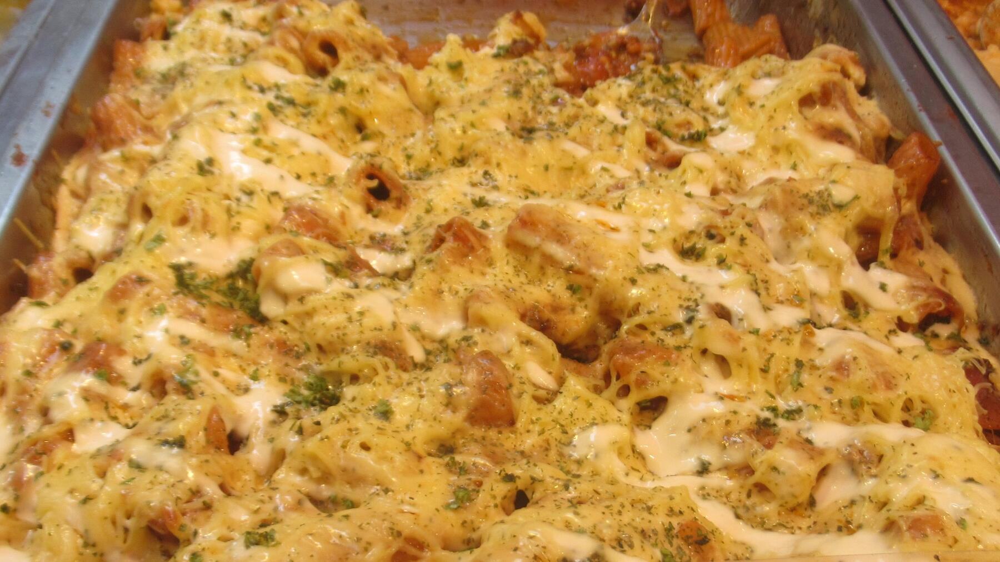

Zurück zur Übersicht
Nudelauflauf mit Tomaten und Mozzarella
Rigatoni in Tomaten-Sahne-Soße mit Kirschtomaten und Basilikum, mit Mozzarella überbacken.
- Zeit
- 1 Std.
- Schwierigkeit
- leicht
- Kategorie
- Pasta
- Ernährung
- vegetarisch
Zutaten
Portionen
- 400 gRigatoni oder Penne
- 1Zwiebel
- 2Knoblauchzehen
- 400 gCherrytomaten
- 500 gPassierte Tomaten
- 1 BecherSahne
- 50 gParmesan
- 125 gMozzarella
- 1Bund Basilikum
- Etwas Olivenöl
- Salz, Pfeffer, Zucker
Zubereitung
- Zwiebel und Knoblauch sehr fein hacken, Cherrytomaten halbieren, Parmesan reiben und Mozzarella grob würfeln. Basilikumblätter abzupfen, waschen und trocken tupfen.
- Nudeln nach Packungsangabe al dente kochen.
- Zwiebel und Knoblauch in einer großen Pfanne in Olivenöl anschwitzen. Passierte Tomaten dazugeben und einige Minuten leicht köcheln lassen. Sahne und Parmesan einrühren und mit Salz, Pfeffer und einer kräftigen Prise Zucker abschmecken.
- Pfanne vom Herd nehmen. Cherrytomaten und die Hälfte des Mozzarellas unterheben, Basilikum in Streifen schneiden und ebenfalls unterrühren.
- Nudeln und Soße in eine Auflaufform geben, mit dem restlichen Mozzarella bestreuen und im vorgeheizten Ofen bei 200 °C Ober-/Unterhitze (180 °C Umluft) auf der mittleren Schiene etwa 20 Minuten überbacken.